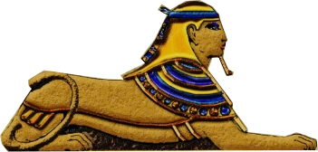
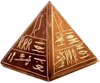
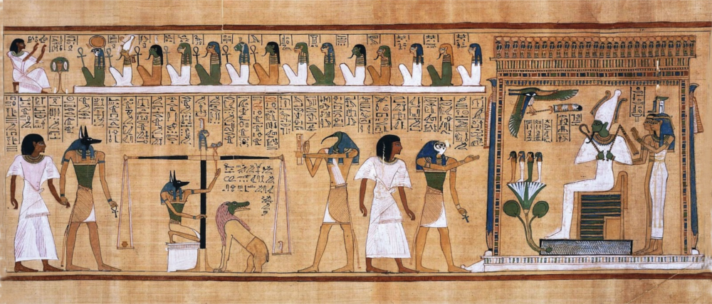
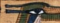
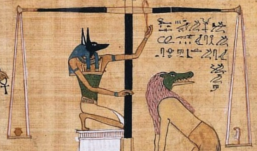

EL JUICIO DE OSIRIS
Aquí tendrá que ir todo el texto de ayuda del juego.....
  
Hola amigos, bienvenidos al videojuego sobre el juicio de Osiris.
Lo primero que tedrás que hacer es encontrar las tres primeras pruebas. BUSCA EL OJO DE ORUS